'Nothing Has Really Changed': In Moscow, the Fighting Is a World Away
A detachment from the battle in Ukraine is exactly what President Vladimir V.Putin of Russia is counting on as he carries out a domestic strategy of shielding his people from hardships.
The New York Times, Sept, 6, 2022 [Original Source]
By Valerie Hopkins Photographs by Nanna Heitmann
MOSCOW — On a recent evening in Red Square, a corps of elite paratroopers dressed in camouflage performed a battle~like dance with pyrotechnics. An Egyptian performer dressed as a pharaoh rode back and forth in a chariot wielding an ankh, th ancient Egyptian symbol of life, as a band played "Katyusha," a Soviet-era patriotic war song.
Nataliya Nikonova, 44, was one of thousands of spectators cheering from the bleachers at a festival celebrating the militaries of Russia and friendly nations including Belarus, India and Venezuela.
"I was so thrilled that I just about lost my voice!" she said.
Russia's army is now waging a slow-moving war that has left tens of thousands dead and contributed to global inflation and a surge in energy prices.
"Nothing has really changed," she said. "Sure, the prices went up, but we can endure that." She rushed off to listen to an encore of "Katyusha" from the Egyptian Military Symphonic Band.
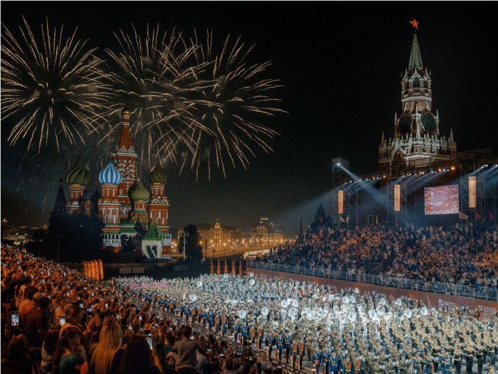
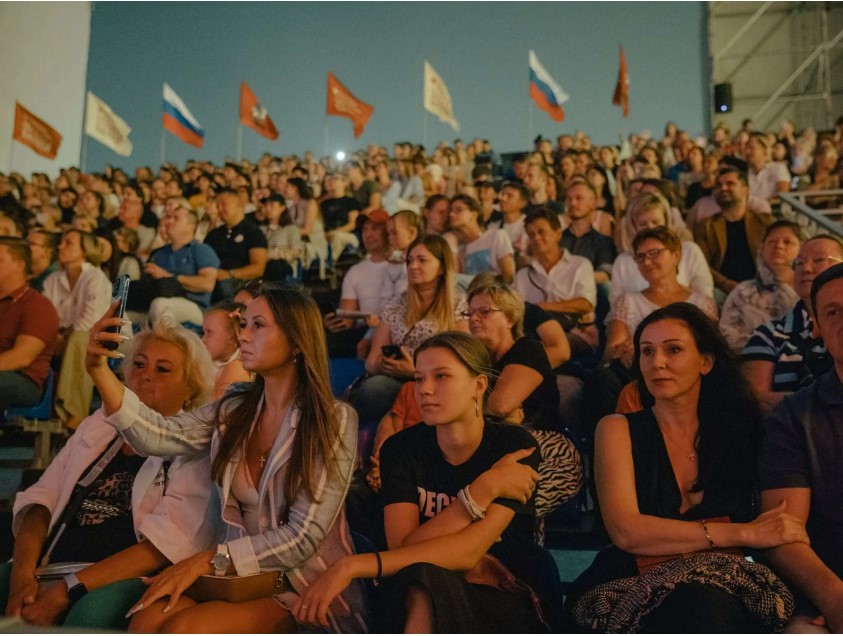
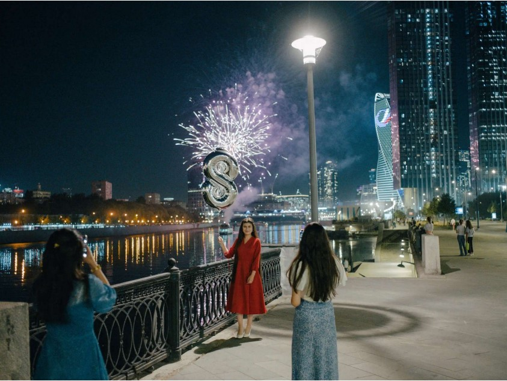
Very little about day-to-day life seems to have changed in Moscow, where people have the financial resources to weather significant price increases, unlike much of the rest of the country. GUM, the luxury mall next to Red Square, is full of shoppers — though many Western stores like Prada, Gucci nad Christian Dior are closed — and the restaurants and theaters do thriving business. Moscow's roads still teem with luxury cars like Lamborghinis and Porsches.
"A few stores closed because of sanctions, with is frustrating but not that bad," said Yuliya, 18, a recent high-school graduate who was hanging out on a bench in Gorky Park, where Muscovites sunbathe, dance and rollerblade. She and ger friends said they don't really think about fighting in Ukarine that often.
That detachment is exactly President Vladimir V.Putin is counting on as he executes a domestic strategy of shielding Russians from the hardships of war — no draft, no mass funerals, no feelings of loss or conflict. Much of Russian's effort on the battlefield has not gone as Mr.Putin had planned, but at home, he has mostly succeeded on making Russian life feel as normal as possible.
Most museums and theaters are open, as long as their leadership didn't critize the Kremlin, and on summer evenings, party boats with effusive revelers ply the nearby Moskva River and people picnic in the grass. The fall seasons in opera and ballet have just begun — though a few anticipated premieres and ongoing productions have been canceled after their directors and stars spoke against the war or fled the country.
"What Russians normally do is protect their everyday lives," said Greg Yudin, a prefessor of political philosophy at the Moscow School of Social and Economic Sciences, describing a coping mechanism that dates from the Soviet period but became widespread during Mr.Putin's tenure.
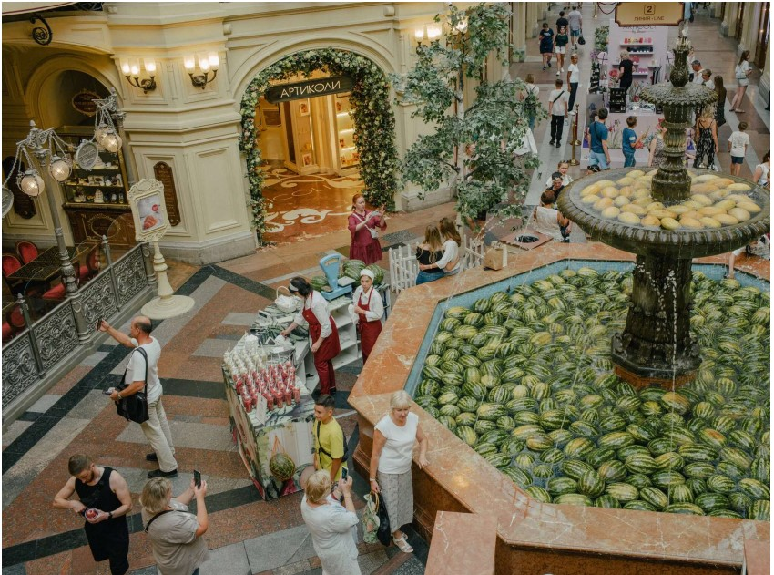
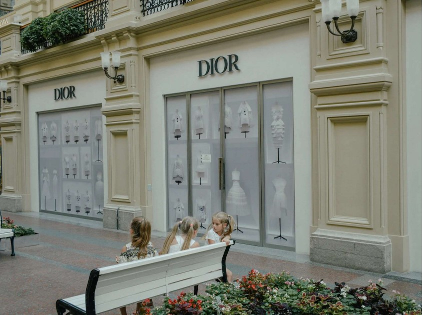
"This is the thing that they always prioritize and that they excel at," he said of Russia's leadership, "and they are doing that now with a considerable degree of success, I would say."
But while many Muscovites embrace revelry and willful ignorance, many of the capital's intelligensia, whose work and life tied them to the West or to Ukraine, are struggling to reconcile the feeling or normalcy with enormity of being engaged in Europe's biggest land war since World War II.
That was evident on Saturday in the outpouring of sympathy and appreciation for the former Soviet leader Mikhail S.Gorbachev, expressed by thousands of Russians attending his funeral, who represented a silent protest against Mr.Putin and his Policies.
As soon as Russian tanks rolled into Ukraine, said Anya, she started reading books about the rise of totalitarianism in Nazi Germany and grappling with the concept of collective guilt.
"It was the end of the world for so many people," said Anya, 34. Like several others interviewed for this article, she did not want to provide her lase name for fear of retribution.
"In your name, someone is killing civillans," she said. "And your country is turning into something like North Korea."
She said she went to a protest and signed an antiwar petition, and several days later, she was invited to invited to resign from her job at a public institution.
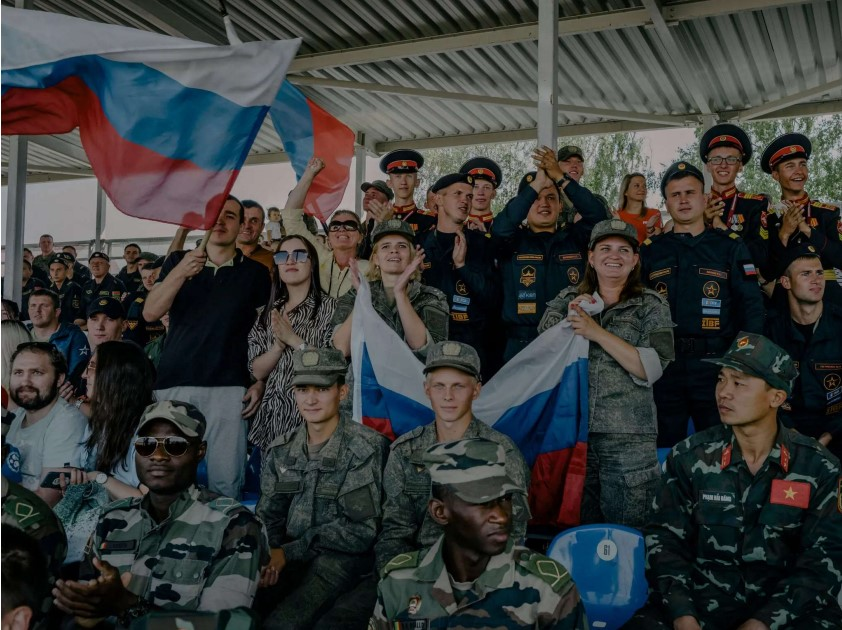
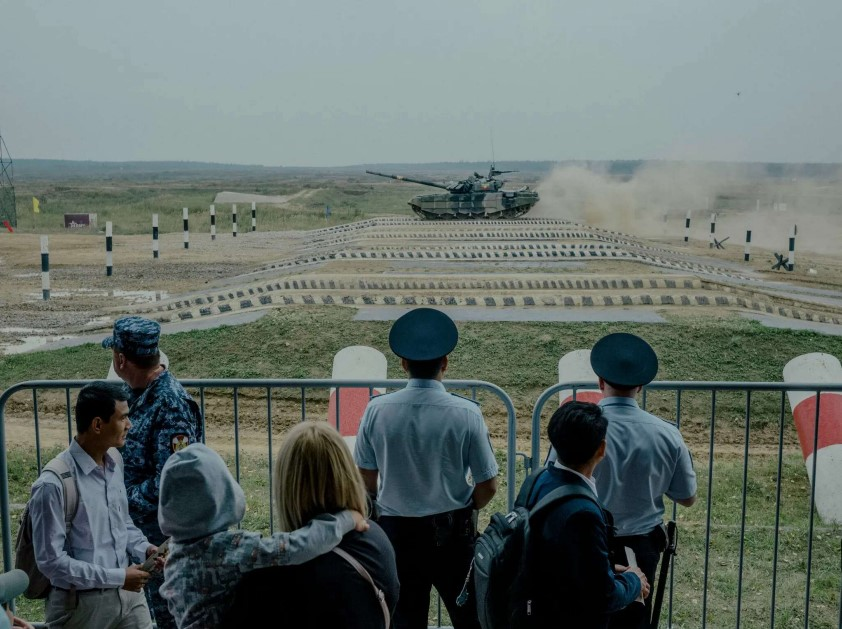
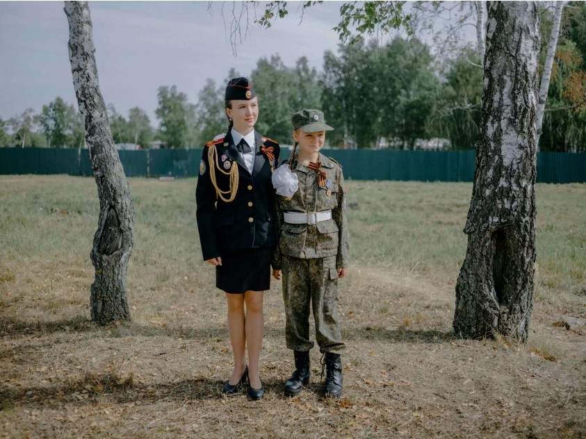
For many years, Mr.Putin has been cracking down on dissent and protesters, but today it is almost impossible to express disenchantment with the system, and people expressing their views do so with the knowledge that a new law punishes criticism of the war. Almost 16,500 people have been arrested on charges of protesting the aggression in Ukraine since Feb, 24, according to OVD-Info, a Russian human rights organization.
Russians who oppose the fighting feel despised and threatened by their government, spurned by the West — which they believe blames them for not protesting the invasion — and powerless to bring about any change.
"We all have this feeling of impotence," said Anya. "The fact that you exist and have your opinion doesn't mean anything. There are five, 10, 20 million of us. And it doesn't make any difference."
Muscovites like Anya spent the first months after conflict started anxious and uncertain. Tens of thousands of them fled. But over the summer, the capital largely returned to normal, buoyed by a soaring ruble, a silenced oppsition and a news media almost completely under the Kremlin's control.
Still, society is changing slowly: While Mr.Putin has sought to infuse a sense of normalcy, he is also working to further militarize Russian society.
Along Moscow's artery roads there are billboards of soldiers listing their rank and title, with a QR code to scan for more information. And there is no shortage of events celebrating Russia's military might.
Thousands of spectators gathered at the Alabino army training ground southwest of Moscow over two weeks to watch th Army International Games, a festival that includes a Tank Biathlon, in which international teams compete to drive a tank through natural obstacles and fire accurately at targets.(Since 2013, when the competition started, Russia has always come in the first place.)
"I've been seeing tanks on TV for all this time; I wanted to see them in real life," said Ilya, 34, who drove out to the event from Moscow with his children, 11 and 4.
"I think every war is bad; I am not saying i support the 'Special Military Operation,' or don't," he said, using Mr.Putin's term for the hostilities in Ukraine. "But I trust the leadership in my country, and if they it is necessary, then it is."
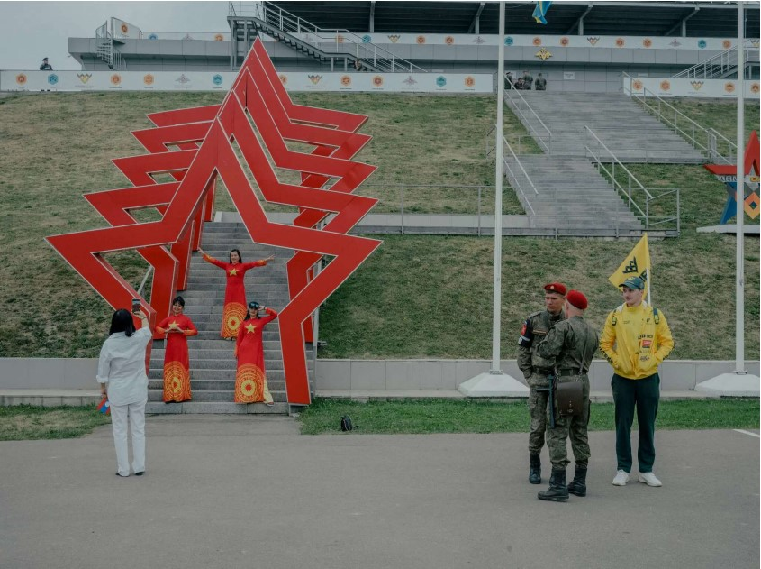
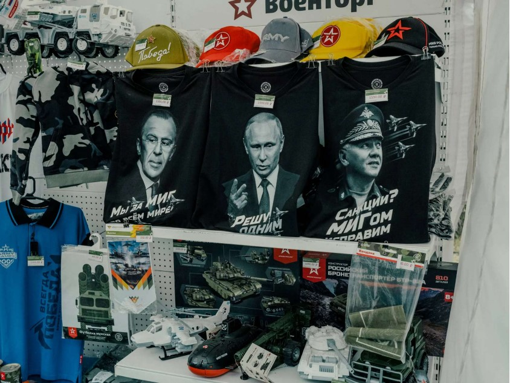
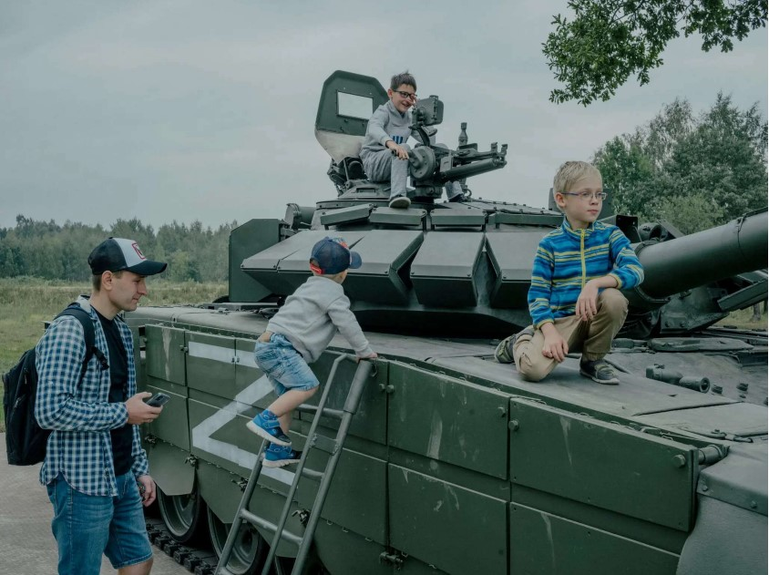
Others said that seeing the weapons on display at the army festival — including Kinzhal missiles being used in Ukraine — made them feel as if they had come from a strong country.
Andrei Yevgenyevich, 55, who was a tank driver in Soviet-controlled Germany in the last days of the Cold War, said the weapons display brought him back to the days when the Soviet Union was a strong country.
"When you see this, you trust that all is well in your country, that everything is as it should be," he said.
"We were raised in the Soviet tradition, and we love our motherland. This brings pride to our country."
As for the sanctions, he said: "I don't feel any difference. I think America and the West are suffering far more."
This is a common refrain on Russia television. State-run media produce daily segments about the uncertainty countries like Germany are facing over gas prices and soaring inflation in Europe and the United States.
At the army training grounds, children scrambled over tanks, including one that said, "Smash the Fascists," and people of all ages shot automatic rifles. But booths inviting vistors to sign a contract to join the army stood empty, save for the recruiters, including that even if nationalism is rising, people are not ready to fight Mr.Putin's war.
"Not a lot of people are coming right now," one military recruiter said, declining to give his name, as the sounds of shots from the nearby firing range could be heard.
For people who are uninterested in army games and accustomed to spending their summers traveling around Europe, there are plenty of homegrown distractions. A recent festival in the art park Nikola-Lenivets, a haven for hipsters a few hours from the capital, drew about 16,000 partygoers in the woods over four days.
One night, people decked out in facial gitter, faux-fur coats and even a jellyfish costume danced to the music of an upbeat reggae performer who promised he wouldn't leave Russia as many other artists had. The crowd went wild.
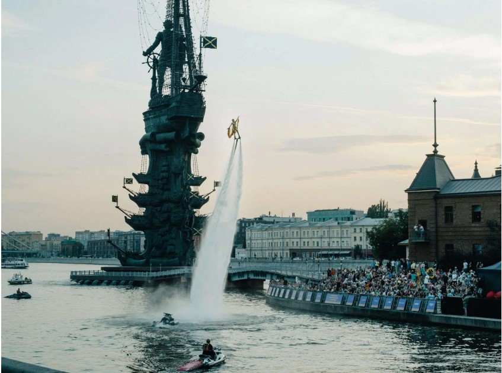
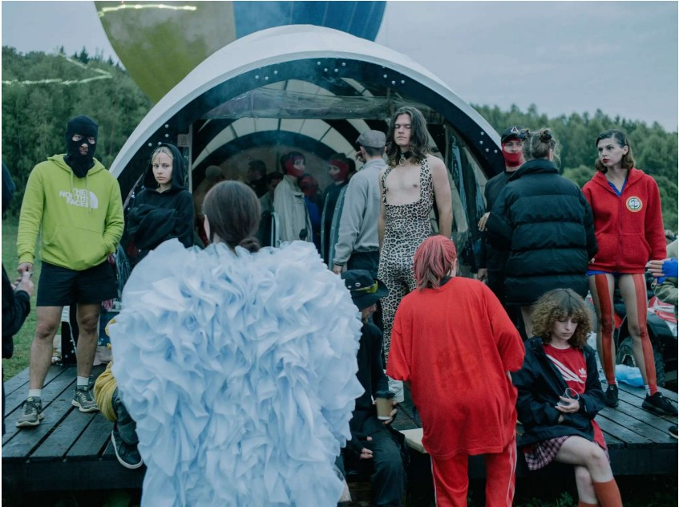
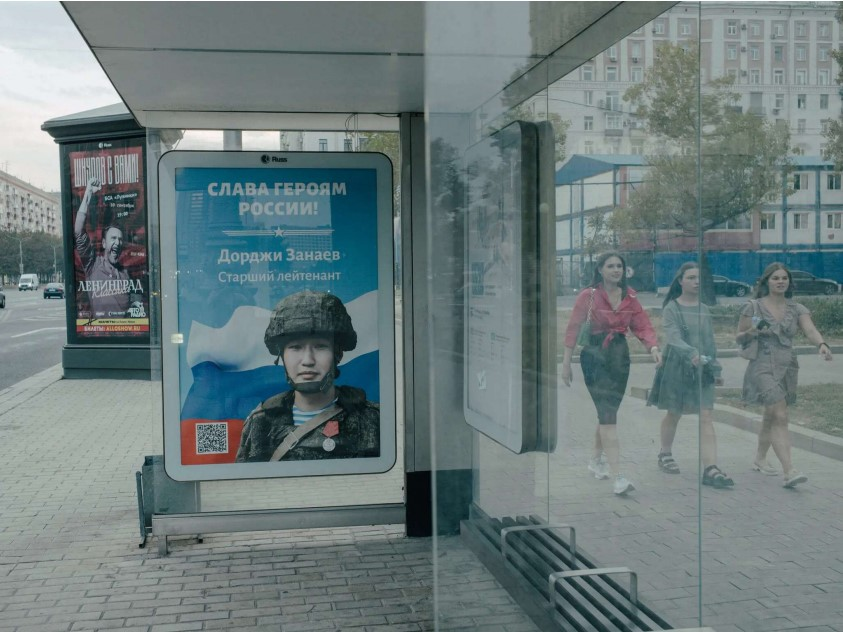
"At first I was thinking to myself, wow, there is a war 400 kilometers away, and we are at a music festival," said Ivan, a 25-year-old who had just returned to his native Russia after several years abroad.
He loosened up eventually.
"Life goes on, especially when there is nothing we can do to control the situation," he said. Back at the Red Square festival, a woman named Ekaterina, 26, a brow technician at a beauty salon, said she and her boyfriend, who serves in the military, felt their "spirits raised" by bands. But she said she was "nervious for the men who are on both sides of the front line."
"Here, people act as if nothing is happening. Here is one world, and there," she said, referring to the field of battle, "is a completely different one."
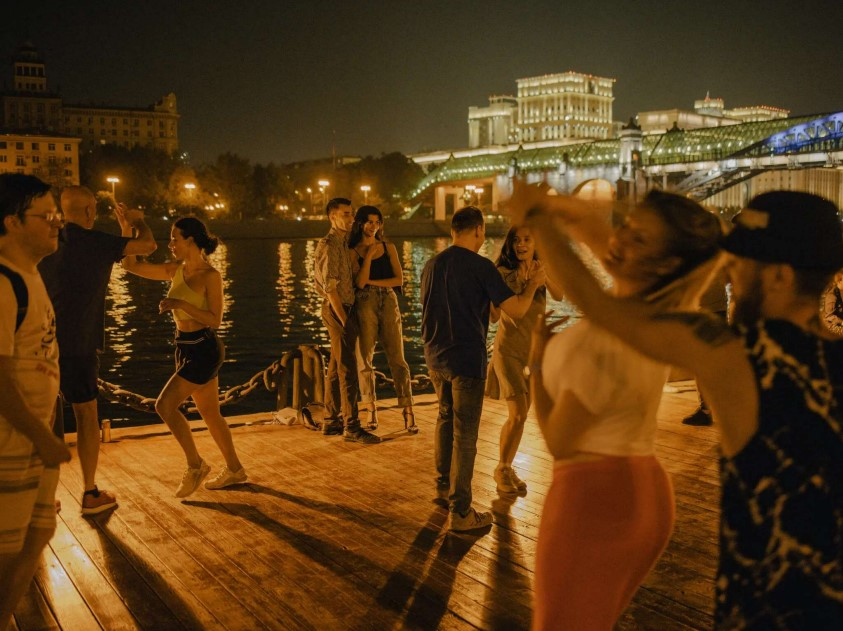